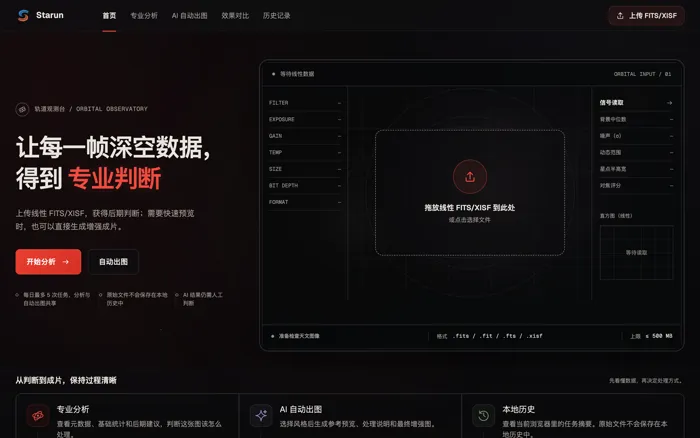
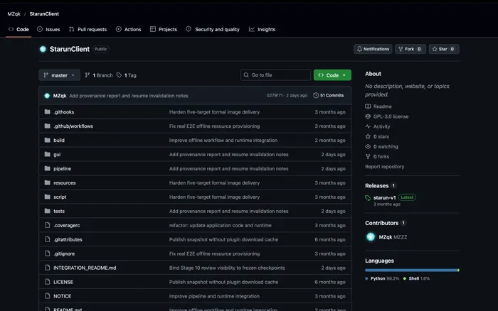
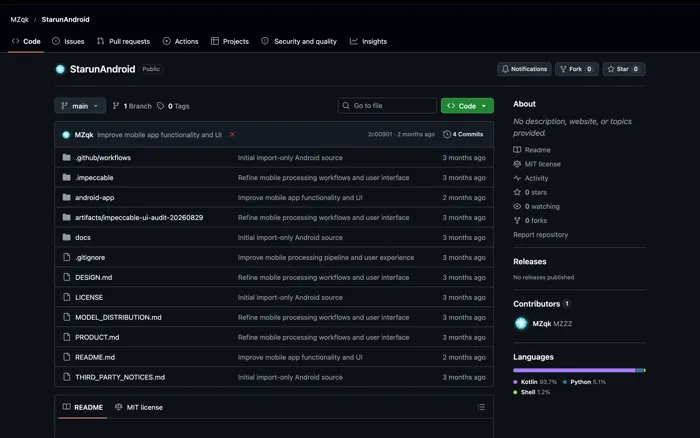
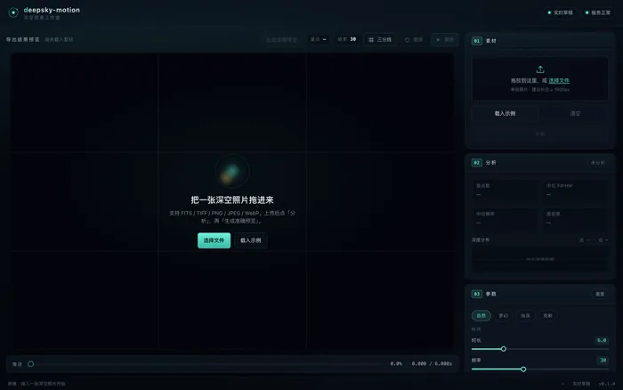
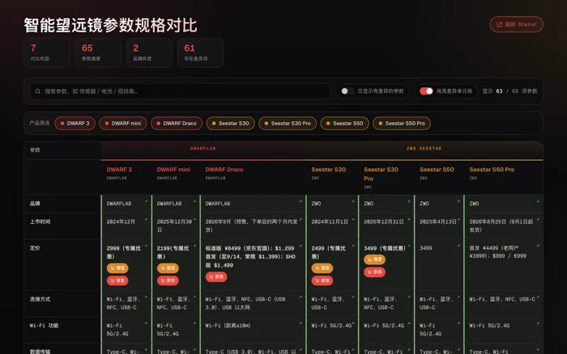
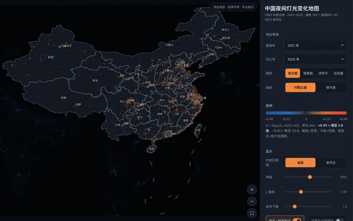
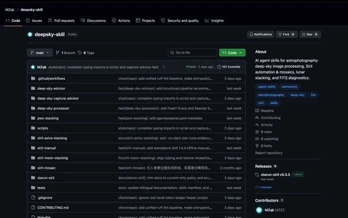

为星空，做一点东西
覆盖从选器材、找暗空，到出片与动态呈现的完整流程。

Starun 网页版
上传线性 FITS / XISF，拿到星点、噪声与动态范围的诊断报告，再选一套风格自动出图。
网页应用 · 专业分析 · AI 自动出图 · 效果对比
打开工作台
Starun 桌面端
整条后期流水线跑在本机，自动叠加、自动拉伸。原片不出硬盘。
macOS 应用 · Apple Silicon · 基于 Siril · 离线运行
查看仓库
Starun 手机端
在 Android 上直接打开 FITS / XISF，通勤路上也能修完一张。离线可用，修完直接分享。
Android 应用 · 离线运行 · 随身后期
查看仓库
deepsky-motion 深空视差
把一张深空照片分成多层星点，用相机推进式运镜生成 3D 视差视频与实况图，导出 MP4 或动态 WebP。
网页应用 · 本机处理 · 星点分层 · 视差运镜
体验视差运镜
智能望远镜对照表
Seestar、DWARF 全系并排对比：口径、传感器、单张曝光上限、内后期能力，价格一起看。
选型参考 · 参数对照 · 口径与传感器
查看对照表
找一片更暗的天空
按波特尔等级看附近的光污染，找到最近一个能拍出银河的点位。
网页应用 · 光污染分级 · 暗空点位
探索暗空点位
DeepSky Skills
拍前给拍摄参数与构图建议，拍后诊断星点，再交给 Siril 完成叠加与马赛克拼接。
Agent 技能 · 拍摄顾问 · 图像诊断 · 叠加拼接
查看仓库一个开发者，
一些关于星空的想法。
白天写代码，夜晚追星光。在一次次被复杂的专业后期软件与繁重配置劝退后，我决定为自己，也为所有守望夜空的朋友，一件件把顺手的工具做出来。
我是 MZZZ。Starun 是我的个人项目集合：从 FITS 在线分析、暗空地图到 3D 视差运镜，均由我一个人独立设计、编码与维护。没有商业冗余，没有繁复门槛，原片不出硬盘。把复杂的步骤变得顺手，让更多时间留给头顶的那片星空。